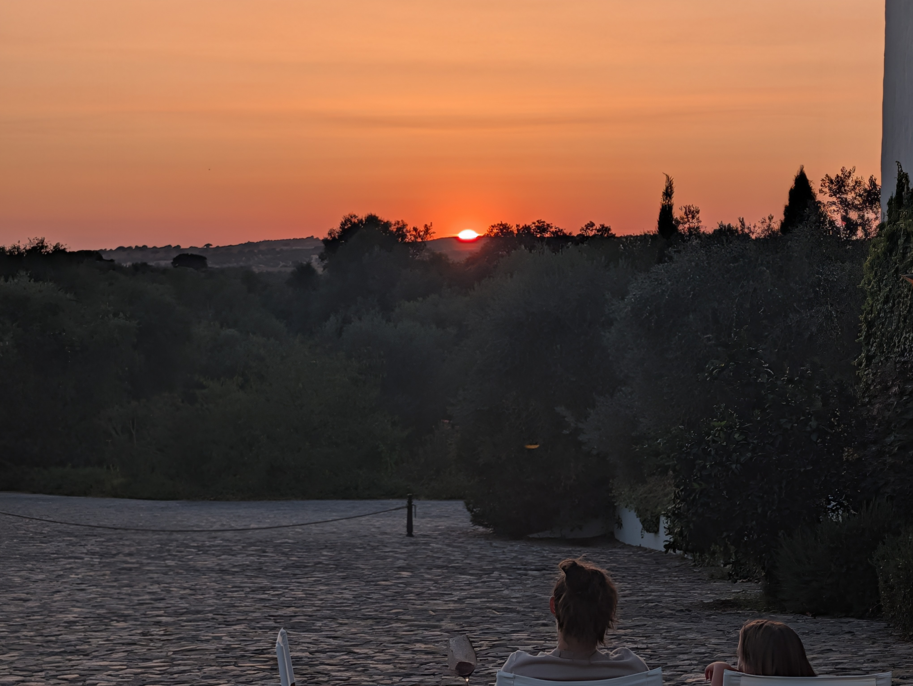
São Lourenço do Barrocal, Alentejo, Portugal Thursday Thursday, July 23, 2026 São Lourenço do Barrocal, Alentejo, Portugal
A beer for me. A glass of wine for Shirley. A warm breeze, birds settling in for the night, and the sun disappearing over the Alentejo.
Read the travel summary: Alentejo & São Lourenço do Barrocal →
Douro River, Portugal Thursday Thursday, July 16, 2026 Douro Valley, Portugal
The Douro outside our window. Riverboats passing by. Kayaking, paddleboarding, and a walk to a café.
Read the travel summary: Douro Valley →
Oualidia, Morocco Thursday Thursday, July 9, 2026 Oualidia, Morocco
A boat across the lagoon. Over the dunes to the Atlantic. For a while, we had the beach virtually to ourselves.
Read the travel summary: Oualidia →
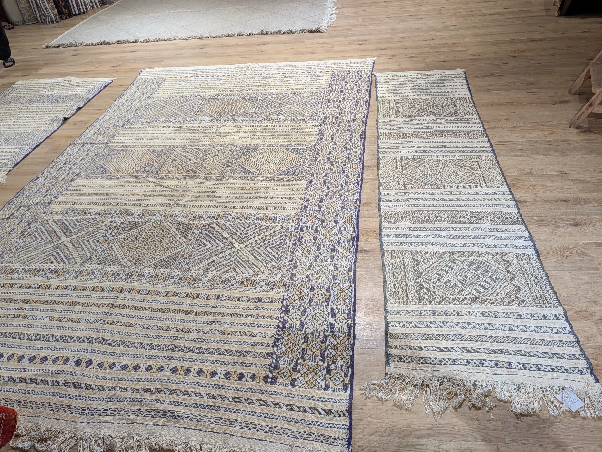
Marrakech, Morocco Thursday Thursday, July 2, 2026 Marrakech, Morocco
The Medina. Carved doors, patterned tile, rugs everywhere. We went into a gallery to look and came out having bought several.
Read the travel summary: Marrakech →
Thursday Thursday, June 25, 2026 Irvine, California
Our last Thursday at home.
Read the travel summary: Leaving Irvine →
Thursday Thursday, May 28, 2026 Bloomfield, New Mexico
Kendra's first day.
Read the travel summary: New Mexico →
Thursday Thursday, May 14, 2026 Irvine, California
Yesterday we signed the offer to sell the house.
Thursday Thursday, April 30, 2026 Irvine, California
Daily house showings continued as April came to a close.
Thursday Thursday, April 23, 2026 Irvine, California
Still at home, with the house being shown every day.
Thursday Thursday, April 16, 2026 Irvine, California
Another week of daily house showings.
Thursday Thursday, April 9, 2026 Irvine, California
The house was being shown daily. Keeping everything ready for the next prospective buyer.
Thursday Thursday, April 2, 2026 Las Vegas, Nevada
Looking for a place to move to, taking another step toward making Nevada our home.
Thursday Thursday, March 26, 2026 Irvine, California
Continuing with repairs to the house. Replacement window panels arrived today—another item on the list as we prepared the house for sale.
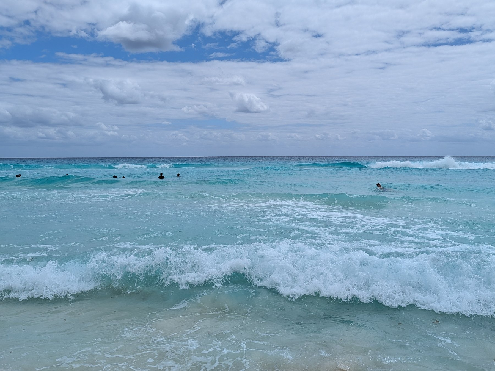
Cancún, Mexico Thursday Thursday, March 19, 2026 Cancún, Mexico
Turquoise water and a beautiful beach.
Read the travel summary: Cancún →
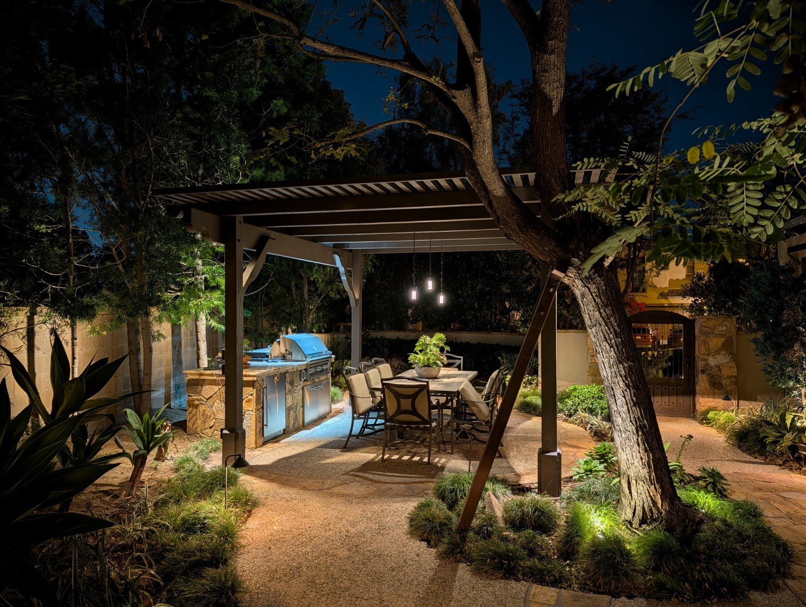
Our patio ready for showing, photographed earlier in March. Thursday Thursday, March 12, 2026 Irvine, California
Our first open house—a twilight showing. After all the preparation, it was time to open the doors to prospective buyers.
Thursday Thursday, March 5, 2026 Irvine, California
We staged the house today, another step toward putting it on the market. After weeks of sorting and preparing, the house was ready for prospective buyers to imagine making it their own.
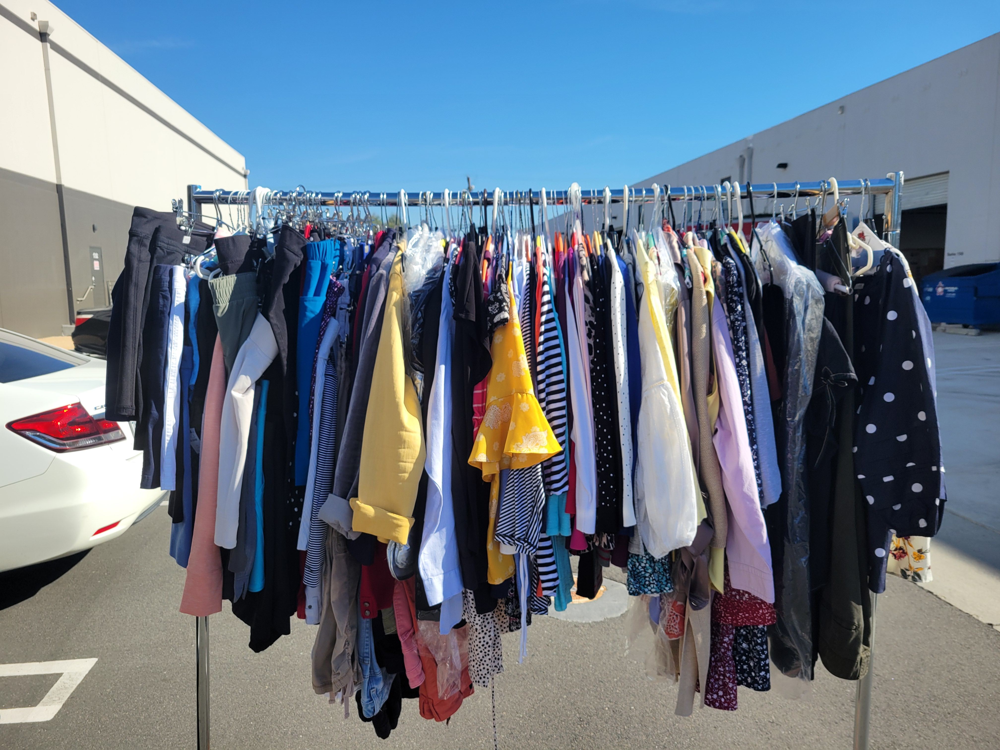
Clearing out the house, Irvine, California Thursday Thursday, February 26, 2026 Irvine, California
Years of possessions headed out the door.
Read the travel summary: Home, But Not Quite Home Anymore →
Thursday Thursday, February 19, 2026 Irvine, California
At home in Irvine, preparing the house for sale.
Thursday Thursday, February 12, 2026 Irvine, California
At home in Irvine, preparing the house for sale.
Thursday Thursday, February 5, 2026 Irvine, California
At home in Irvine, preparing the house for sale.
Hermanus, South Africa Thursday Thursday, January 29, 2026 Hermanus, South Africa
A late breakfast, museums in town, appetizers and drinks, then a three-mile walk back along the coast.
Read the travel summary: Hermanus →
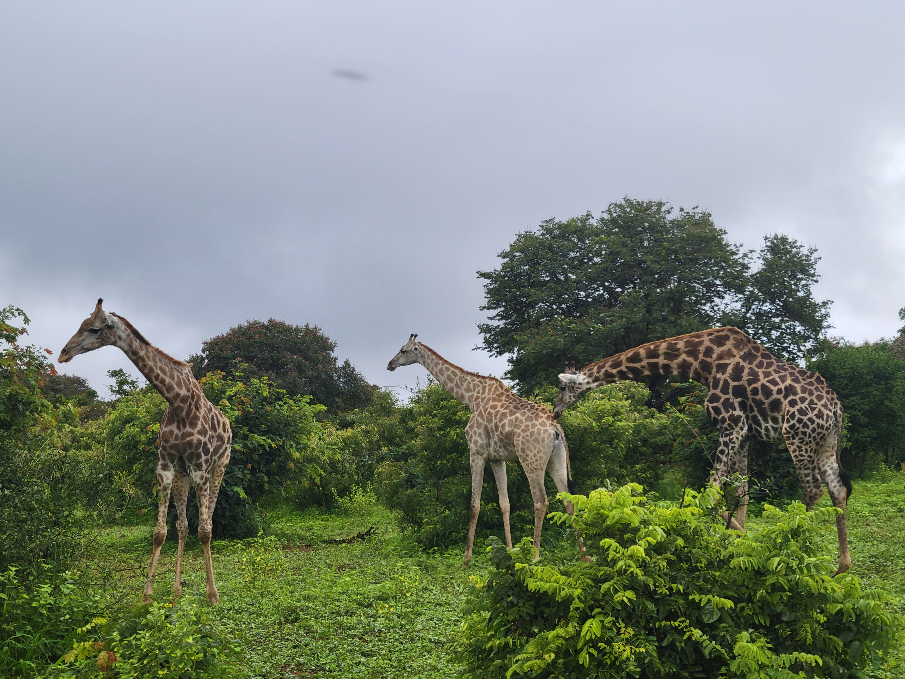
Chobe, Botswana Thursday Thursday, January 22, 2026 Chobe, Botswana
A 4:30 wake-up. Giraffes, impala, jackals, a leopard, and an elephant.
Read the travel summary: Botswana Safari →
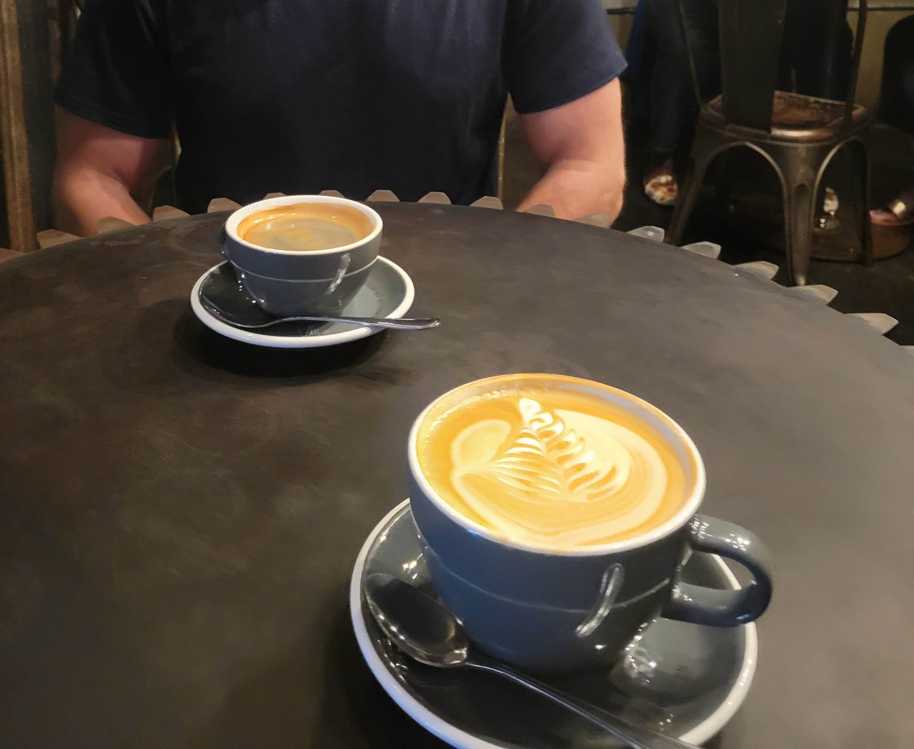
Truth Coffee, Cape Town, South Africa Thursday Thursday, January 15, 2026 Cape Town, South Africa
We stopped at Truth Coffee for what we thought would be coffee to go.
Read the travel summary: Cape Town →
At sea, off the west coast of Africa Thursday Thursday, January 8, 2026 At sea
Two sea days ahead before Walvis Bay, then one more before Cape Town. We were already sad that this part of the trip was coming to an end.
Read the travel summary: Namibia to Cape Town →
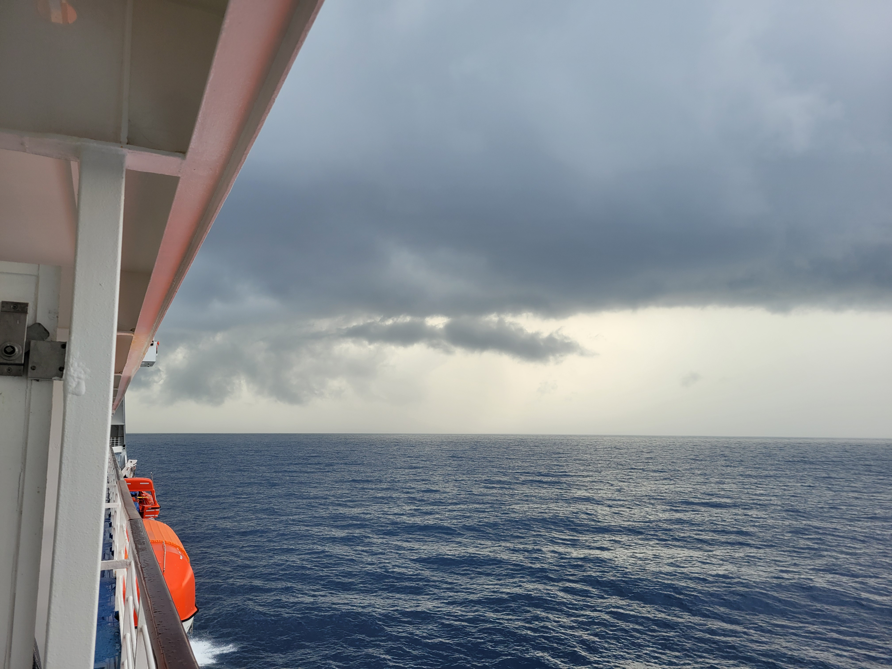
Off the coast of Liberia Thursday Thursday, January 1, 2026 At sea, off Liberia
New Year's Day. Thunder and lightning. Sailing in and out of rainstorms off the coast of Liberia.
Read the travel summary: West Africa →
At sea, off Western Sahara Thursday Thursday, December 25, 2025 At sea, off Western Sahara
Christmas Day. Somewhere off the coast of Western Sahara.
Read the travel summary: Barcelona to Cape Town →
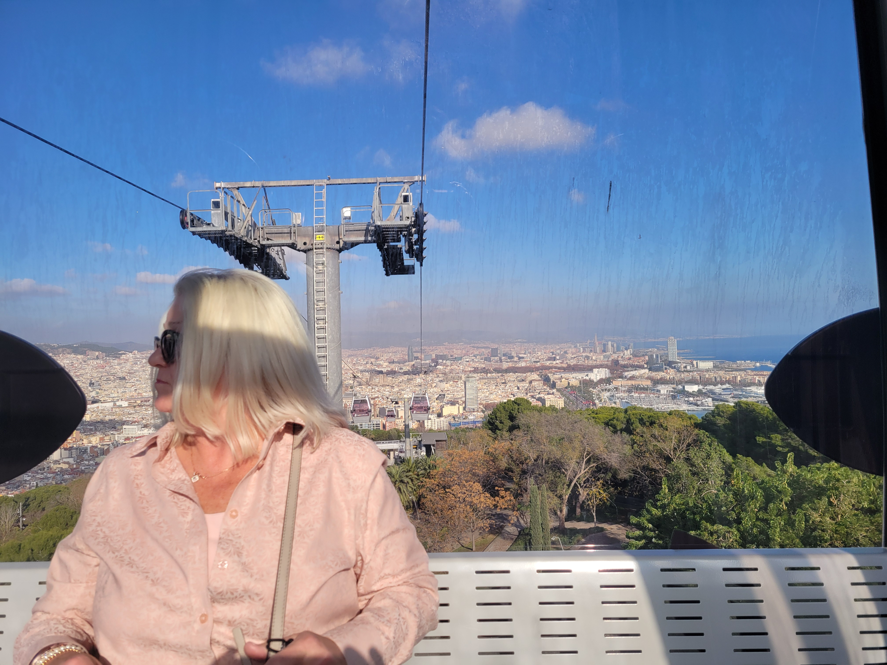
Montjuïc, Barcelona, Spain Thursday Thursday, December 18, 2025 Barcelona, Spain
The funicular was closed, so we walked partway up Montjuïc and took the cable car the rest of the way. The castle, another cable car down to the beach, a late lunch, Ciutadella Park, the Arc de Triomf, and the metro home.
Read the travel summary: Barcelona →
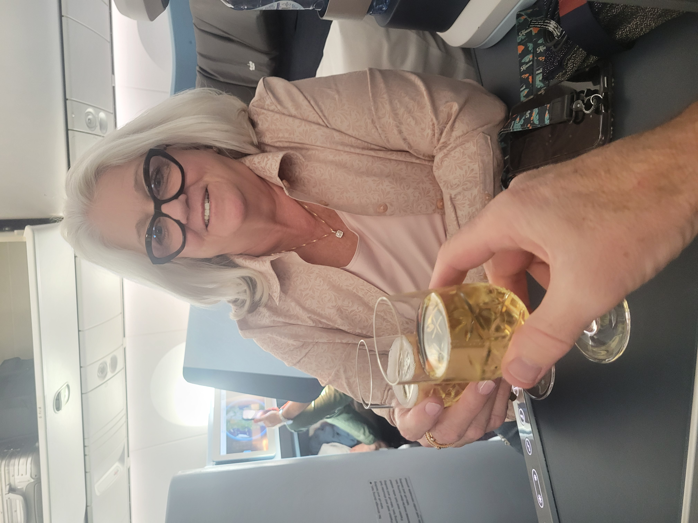
Air France lounge, LAX Thursday Thursday, December 11, 2025 Los Angeles, California
On our way to Barcelona.
Read the travel summary: Barcelona →
Thursday Thursday, December 4, 2025 Irvine, California
Home in Irvine, preparing for our trip to Spain.
Crystal Cove, California Thursday Thursday, November 27, 2025 Crystal Cove, California
Thanksgiving Day at Crystal Cove with Shirley and Laura.
Thursday Thursday, November 20, 2025 Irvine, California
Home again after our trip to Maui.
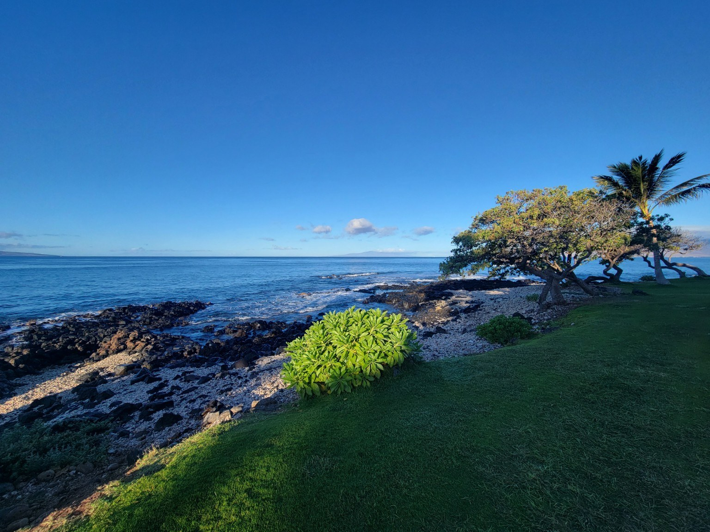
The shoreline at Wailea Beach Resort, photographed another day during the same stay. Thursday Thursday, November 13, 2025 Wailea Beach Resort, Maui
Neither of us took a photograph that Thursday. This view of the shoreline is from another day during the same stay.
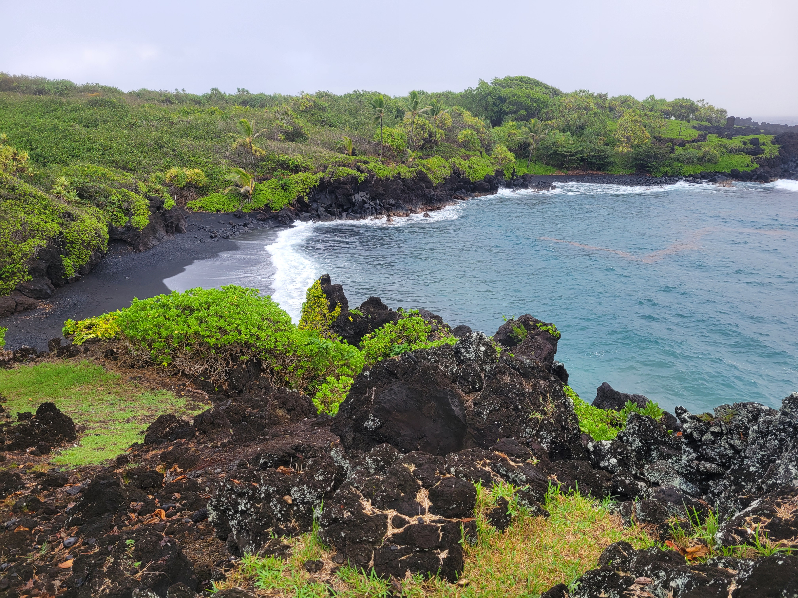
Waiʻānapanapa State Park, Maui Thursday Thursday, November 6, 2025 Waiʻānapanapa State Park, Maui
Rain nearly the entire hike.
Read the travel summary: Hana & Upcountry Maui →
Thursday Thursday, October 30, 2025 Irvine, California
Home, preparing for our trip to Maui.
Thursday Thursday, October 23, 2025 Miami to Los Angeles
Our Panama Canal cruise ended in Miami on Monday. We stayed a few more days, then flew from Miami to LAX today.
Read the travel summary: Panama Canal →
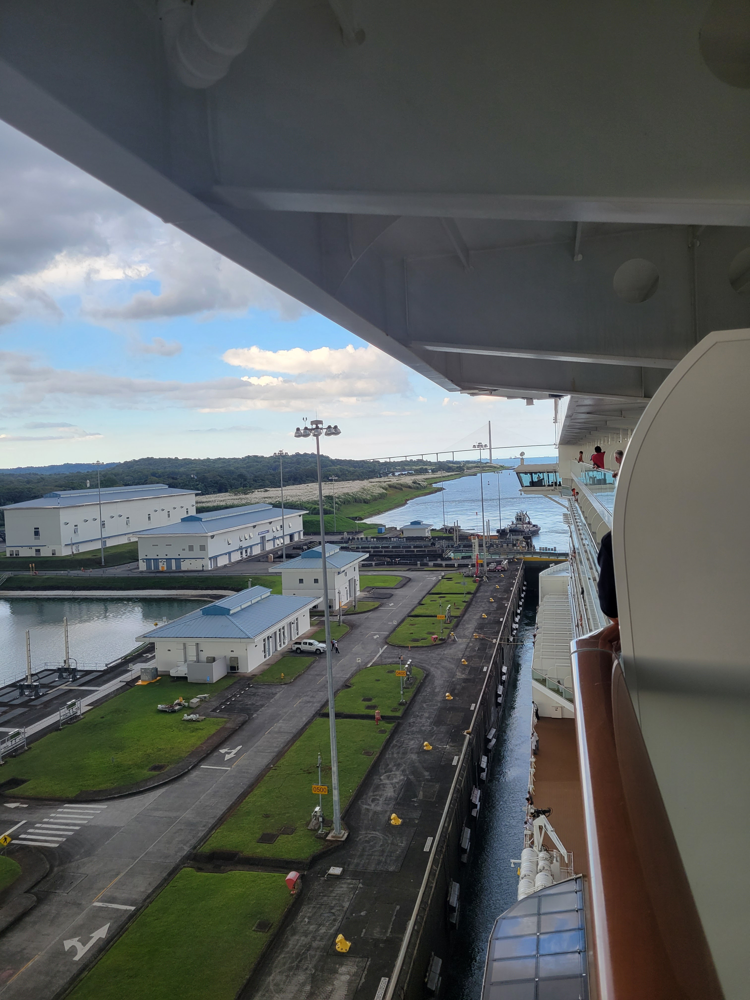
Panama Canal Thursday Thursday, October 16, 2025 Panama Canal
Through the locks today.
Read the travel summary: Panama Canal →
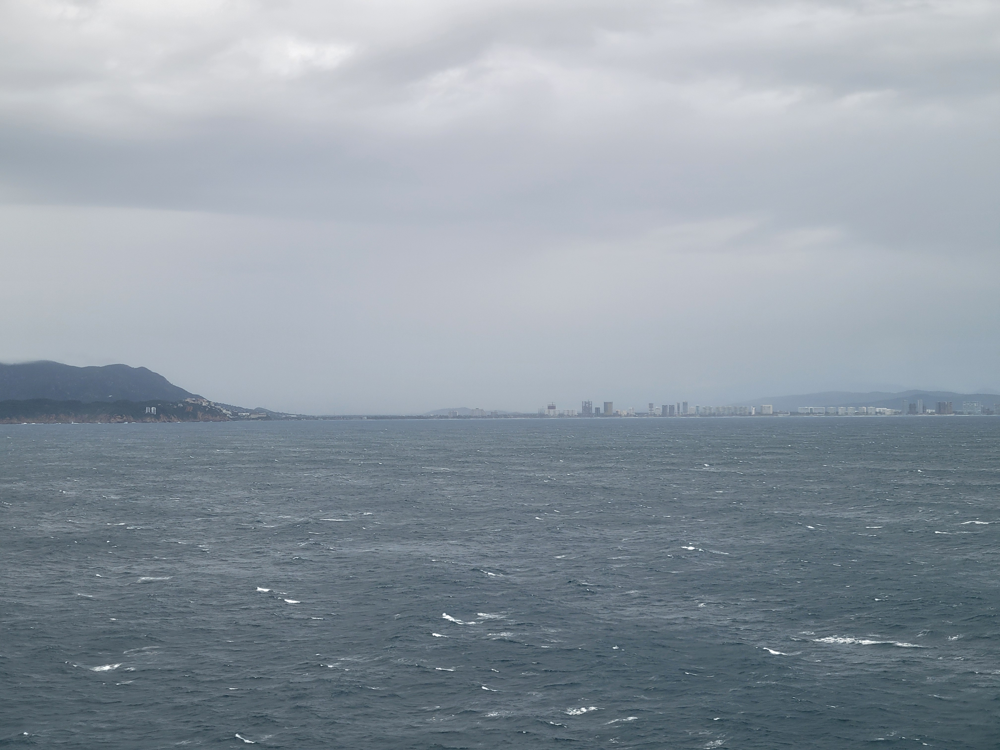
Off the coast of Mexico Thursday Thursday, October 9, 2025 Off the coast of Mexico
We were supposed to be in Acapulco.
Read the travel summary: Panama Canal →
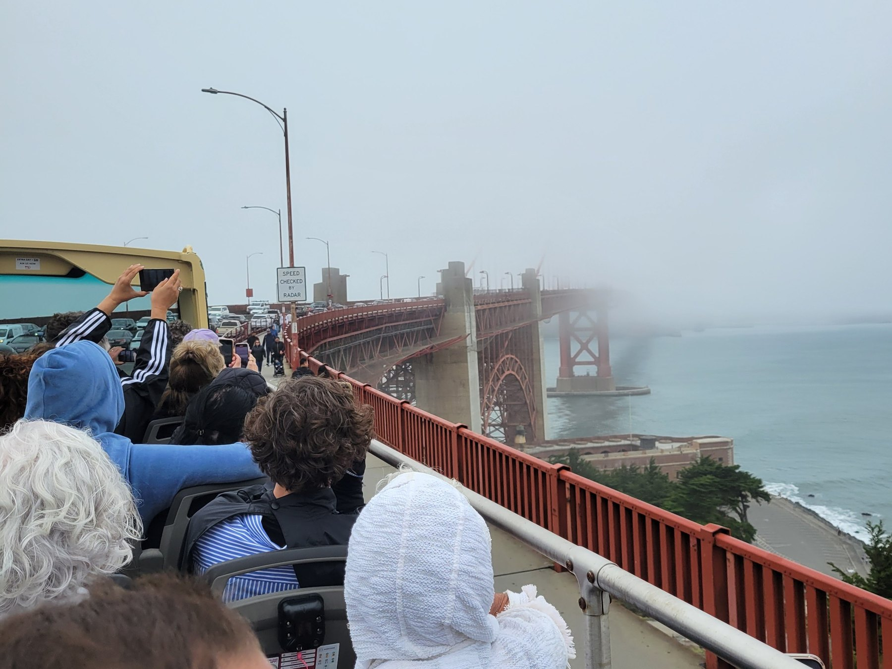
San Francisco, California Thursday Thursday, October 2, 2025 San Francisco, California
We sailed into San Francisco that morning, then spent the day exploring the city from the top of a bus.
Read the travel summary: Panama Canal →
Thursday Thursday, September 25, 2025 Irvine, California
Preparing to leave for Seattle to catch the Panama Canal cruise. We left the next day.
Read the travel summary: Panama Canal →
Thursday Thursday, September 18, 2025 Irvine, California
Home alone. Shirley was visiting family between trips.
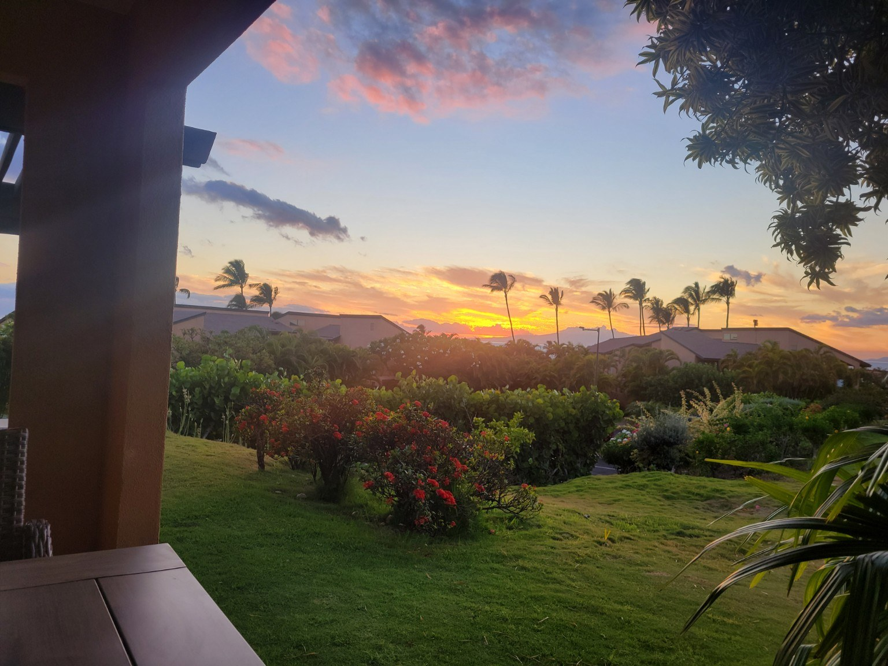
A sunset from our patio in Wailea, photographed earlier in the same stay. Thursday Thursday, September 11, 2025 Wailea, Maui
Still in Wailea. Neither of us took a photograph that Thursday, but this sunset from our patio captures something of our time there.
Read the travel summary: Wailea →
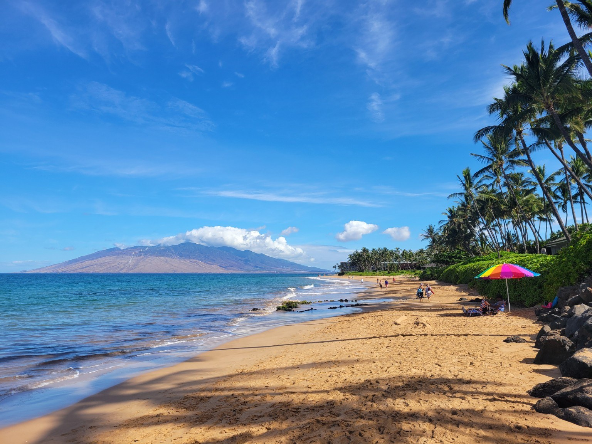
The beach in Wailea, photographed earlier in the same stay. Thursday Thursday, September 4, 2025 Wailea, Maui
Neither of us took a photograph that Thursday. This is the beach where we spent our days, photographed earlier in the same stay.
Read the travel summary: Wailea →
Thursday Thursday, August 28, 2025 Irvine, California
Home, and apparently in the middle of moving Sharon to her new home at the retirement community. The note for tomorrow said, “Expect Movers.”
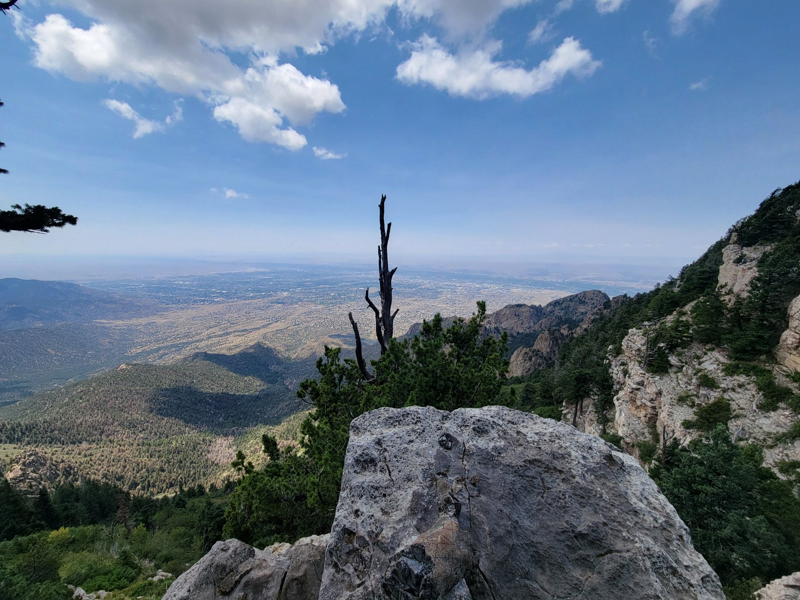
Cibola National Forest, New Mexico Thursday Thursday, August 21, 2025 Cibola National Forest, New Mexico
Shirley's birthday. A quick stop in Cibola National Forest on our way to visit Rachel and the grandchildren.
Read the travel summary: Baltimore & New Mexico →
Thursday Thursday, August 14, 2025 Baltimore, Maryland
Visiting Laura in Baltimore.
Read the travel summary: Baltimore & New Mexico →
Thursday Thursday, August 7, 2025 Irvine, California
Home, two days after the sale of the school closed.